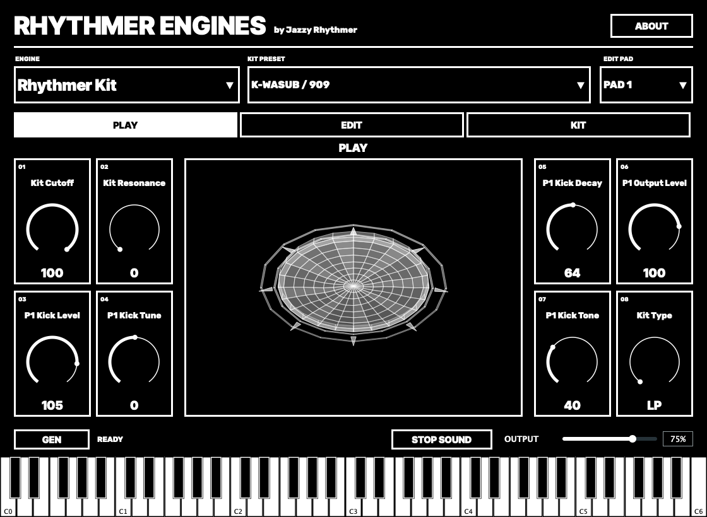
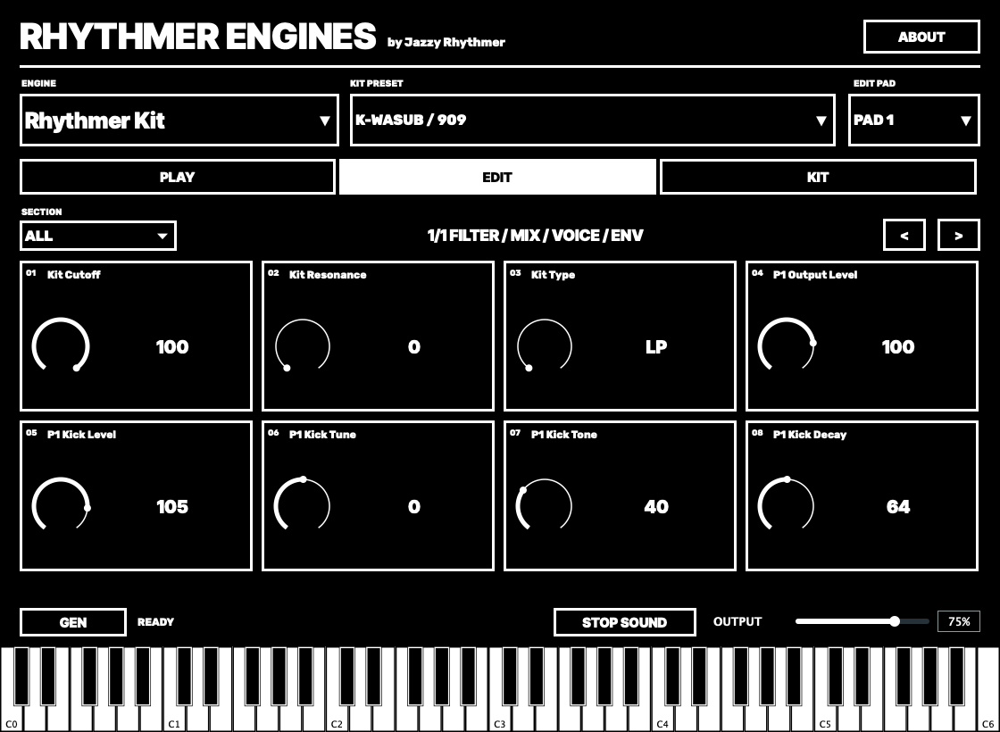
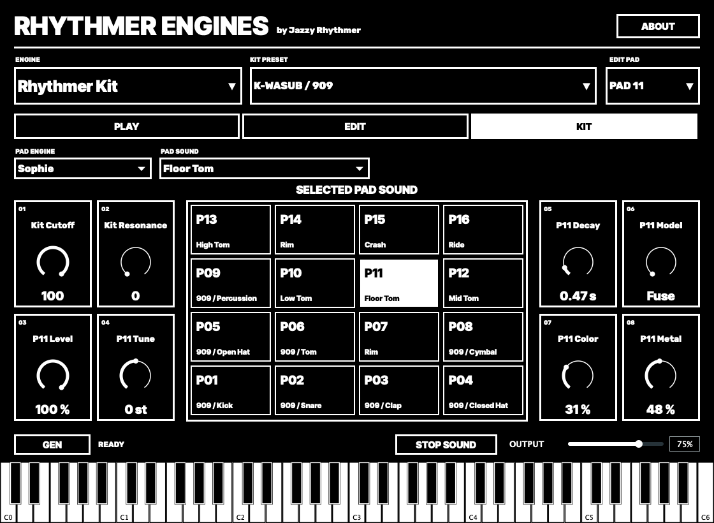

Rhythmer Kit
36 complete kits. Replace and shape individual pad sounds.

Synths, drums and unexpected textures. Find a sound, shape it with hands-on controls, and turn an idea into a MIDI pattern. Bring the RHYTHMER palette into the way you already make music.

THE SOUND PALETTE
Explore the original engine names, factory banks and sound-design controls. Rhythmer Kit brings the drum engines together in one playable instrument.
36 complete kits. Replace and shape individual pad sounds.

Interface previews from the Mac instrument. Load the plug-in in your DAW to play the sounds.
A DIRECT WAY INTO THE SOUND
Eight main controls and an engine-specific animation that responds as you play. Choose a preset and make it your own.

Sound, modulation and effects controls, grouped by purpose. Up to sixteen controls share each compact EDIT page. Related groups stay together, with the current page always visible.


RHYTHMER KIT
Play all sixteen pads. Choose a complete kit, then replace a pad’s engine or sound. Shape the selected pad and use the kit filter to bring the whole drum mix together.
The starting kit is K-WASUB / 909. Kit levels are balanced around that reference, with a peak guard for the combined output.

GEN / MIDI PATTERNS
Generate a melody, a chord progression or a drum pattern. Choose a genre, key, scale and length. Explore Block, Arp and Strum chord styles, then try a variation.
Drag MIDI into your DAW or export a MIDI file. Edit and play the clip there, at your project’s tempo. GEN creates the notes; your DAW handles playback.
YOUR FIRST SESSION
Load Rhythmer Engines AU or VST3 on a MIDI instrument track. Open its custom editor. Rhythmer Kit / K-WASUB / 909 is the starting sound.
Play the kit’s pads from notes 36–51 (C1–D♯2 when C3 is note 60), or choose a synth with ENGINE. Use PRESET to browse that engine’s sounds.
Use the eight PLAY controls for the main sound. Open EDIT for the full controls. In a kit, select a pad before changing its sound or parameters.
Open GEN, choose Melody or Chords for a synth, or Drums for a kit. Generate, inspect the notes, then drag MIDI into a DAW clip lane. Use Export MIDI if your host does not accept a file drag.
Incoming MIDI velocity reaches the instrument. MIDI GEN keeps note velocities and lengths in the exported file. Save your DAW project to retain the engine, sound edits, kit routing and GEN pattern. STOP SOUND silences held sound; DAW transport stop also clears held notes and sustain.
GEN uses 4/4 and writes no tempo change into its MIDI files. It does not run a second sequencer or provide a real-time MIDI-output port. For Block chords, choose a polyphonic sound; Arp also works with monophonic sounds.
DAWs use different octave names. MIDI note numbers are the reliable reference for the kit: 36–51.
RHYTHMER ENGINES FOR MAC
The Mac release is being prepared. Follow Studio Notes for availability, music and new tools.
GET RELEASE UPDATESREAD THE FIRST-SESSION GUIDEFor Apple Silicon Macs running macOS 13 or later.
Quit your DAW. Copy the complete AU bundle to ~/Library/Audio/Plug-Ins/Components/, or the VST3 bundle to ~/Library/Audio/Plug-Ins/VST3/. Restart and rescan your DAW. Keep one copy of each format to avoid loading an older system-wide installation.
BUILT ON SHARED KNOWLEDGE
Original synthesis belongs to its authors. RHYTHMER brings these engines together with porting, integration, a common interface and MIDI tools by Jazzy Rhythmer. The instrument retains components from Melodee by Kerem Kilic / Ellic Studio and the original engine projects.
Engine code, preset data and bundled components retain their respective licences. Full notices will accompany the Mac package.
JAZZY RHYTHMER / FROM THE STUDIO
Music, instruments & open-source firmware. Building JR Audio Software.